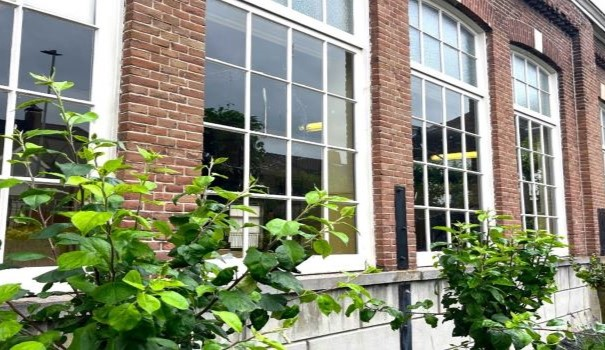

Vergaderingen en bijeenkomsten
Het tuinhuis in het voormalig schoolgebouw is een ideale locatie voor vergaderingen en bijeenkomsten. Van vergaderlocatie, tot creatieve activiteiten; het is allemaal mogelijk in deze ruimte. Voor meer informatie en mogelijkheden graag contact per email.
